3 Results
3.1 Experimental limitations and associated assumptions
Fish which were used for multiple experiments seemed to have a significantly lower travel time from the lower basin to the lower valve. More specifically, it seems that fish that were re-used for a second experiment moved from the lower basin to the lower valve significantly quicker (Figure 3.1). It cannot be said with certainty that this finding, fish being familiar to the system moving more quickly through it, is of a causal nature as the conditions of the experiments themselves might have differed as well. Fish that were used multiple times did not seem to be more or less likely to move up and down the FSSG multiple times within an experiment (Figure 3.2).
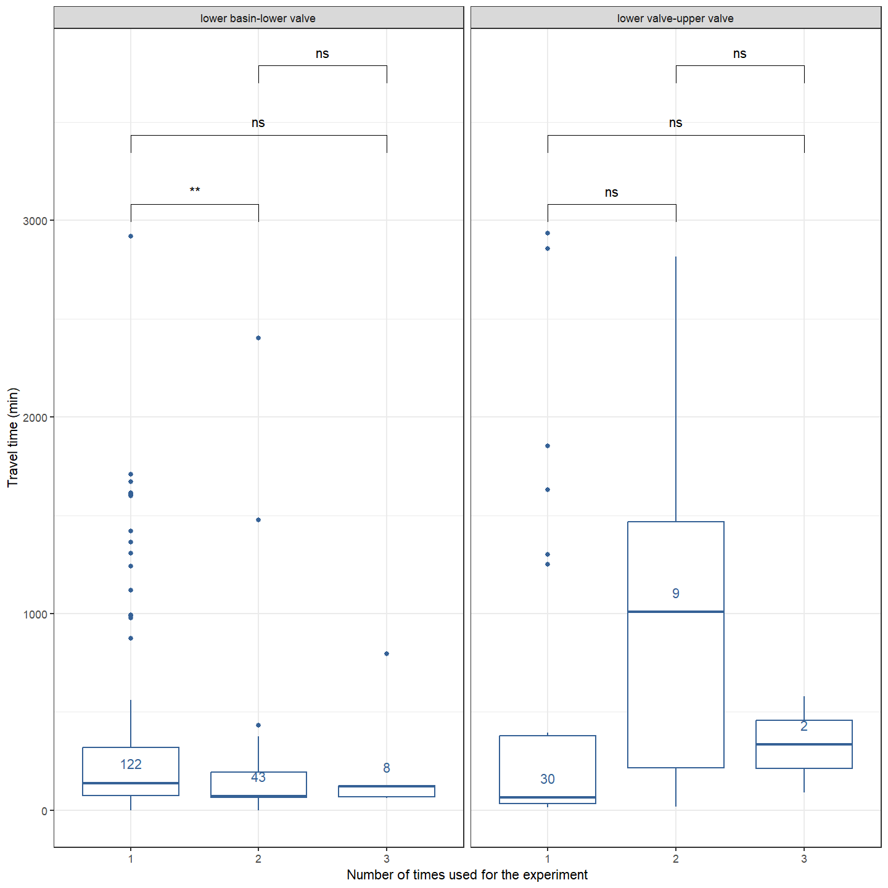
Figuur 3.1: Travel time (min) from the lower basin to the lower valve and from the lower valve to the upper valve in function of the number of a times a fish was used in experiments. Pairwise wilcoxon ranks sum tests with Bonferroni correction were applied. p-values were classified as ns ($>$0.05), * (0.05-0.01), ** (0.01-0.001), *** (0.001-0.0001), **** (0.0001-0).
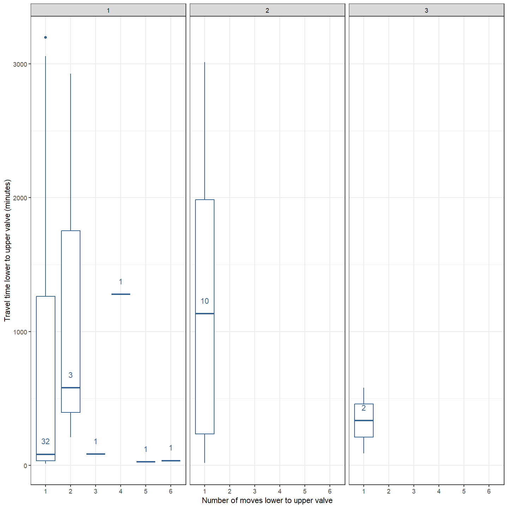
Figuur 3.2: Travel time (min) from the lower valve to the upper valve in function of the number of times a fish moved from the lower valve to the upper valve. A distinction is made between fish that have been used once, twice, or three times.
Although most fish went through the system (from the lower valve to the upper valve) only once, some went through the system several times (Table 3.1). For exp3, one fish went up to six times through the system.
| exp | 1 | 2 | 3 | 4 | 5 | 6 |
|---|---|---|---|---|---|---|
| exp1 | 8 | 1 | 0 | 0 | 0 | 0 |
| exp2 | 24 | 1 | 0 | 0 | 0 | 0 |
| exp3 | 21 | 3 | 1 | 1 | 1 | 1 |
Detection probability at the lower antenna for exp1, exp2 and exp3 were 100%, 83% and 83%, respectively. Detection probability at the upper antenna for exp1, exp2 and exp3 were 6%, 28% and 39%, respectively.
3.2 Entrance efficiency, passage efficiency and overall efficiency
Before fish can successfully enter and pass the FSSG they need to be able to find the entrance (i.e., attraction efficiency). Unfortunately, the current experimental set-up does not allow for an assessment of the attraction efficiency as the area in which fish were released was too narrow to be representative for most real-life situations (Triano et al., 2022).
Entrance efficiency is defined as the percentage of attracted fish that enter the fishway (Cooke & Hinch, 2013). In this study the entrance efficiency is considered the proportion of tagged fish able to enter the FSSG (i.e., the lower valve) and swim through it. In practice, this is the proportion of released fish detected on either the lower antenna, upper antenna or recaptured in the upper basin. Since all tagged fish are considered to be attracted to the FSSG due to the narrowness of the lower basin and proximity of the entrance of the FSSG, all tagged fish were considered for the entrance efficiency. Entrance efficiency was very different between experiments and was highest for exp1 (0.98) and lowest for exp3 (0.70) (Table 3.3). It should be noted that the calculated metric is most likely an overestimation from the actual entrance efficiency that was obtained in this lab setting. This is because fish in the narrow lower basin had no real other options than move towards the entrance and fish that lingered outside the entrance without entering might also have been detected by the lower antenna. Due to the imperfect detection probability of the lower antenna (exp1: 100%, exp2: 83% and exp3: 83%) fish might have passed through the lower antenna without being detected, resulting in an underestimation of the metric. However, this effect is most likely to be less of an issue compared to the former two. Not only because the detection probability of the lower antenna was relatively high, also because of the combined opportunities of detection at both the lower and upper antennas and the opportunity to recapture fish at the upper basin (i.e., fish that were not detected at the lower antenna but detected at the upper antenna and/or recaptured in the upper basin must have entered at some point and were therefore also labelled as such).
Passage efficiency is defined as the percentage of entered fish that successfully pass the FSSG (Cooke & Hinch, 2013). In this study, the passage efficiency is considered the proportion of entered fish that were able to move through the exit of the FSSG. In practice, this is the proportion of fish that are detected on the upper antenna and/or recaptured in the upper basin over the fish that are known to have entered the FSSG (i.e., they were detected on at least one antenna or recaptured in the upper basin). Passage efficiency was more similar between experiments than the entrance efficiency and was highest for exp2 (0.84) and lowest for exp3 (0.68) (Table 3.3). Unfortunately, the pit antenna at the upper valve failed to detect numerous fish (as many fish undetected by the upper antenna were recaptured in the upper basin) and for this reason it was important to also look at the number of fish that were recaptured in the upper basin to determine the passage efficiency. Using both the number of recaptured fish and the detections yielded the highest and most representative passage efficiency as some fish that reached the upper basin might have moved back to the lower basin. Without the pit antenna this would not have been recorded. Nevertheless, because of the very low detectability (exp1: 6%, exp2: 28% and exp3: 39%) the issue remains that fish moving to the upper basin and back to the lower basin or the area between the lower and upper valve, might not always have been detected. In addition, since the number of entered fish is most likely to be an overestimation and given that this is the reference for the estimation of the passage efficiency, the latter might be further underestimated. The passage efficiency calculated here, even the one that combines recapture and detections, is therefore most likely to be an underestimation from the actual passage efficiency that was obtained in this lab setting.
| Metric | Underestimation | Overestimation | Reliability |
|---|---|---|---|
| Entrance efficiency | Not all fish that entered might have been detected (i.e., imperfect detection probability) | Fish in the narrow lower basin had no real other options than move towards the entrance Fish that lingered outside the entrance without entering might have been detected by the lower antenna |
Most likely an overestimation |
| Passage efficiency | The number of entered fish (denominator of metric) is likely to be overestimated Not all fish that exited might have been detected (i.e., imperfect detection probability) |
Fish that lingered before the exit without entering might have been detected by the lower antenna | Most likely an underestimation |
Overall efficiency is defined as the percentage of all approaching fish that are attracted to, enter and pass through the exit of the FSSG (Baker et al., 2019). In this study, the overall efficiency is considered the proportion of all tagged fish that were able to move through the FSSG. In practice, this is the proportion of fish that are detected on the upper antenna and or recaptured in the upper basin over the total number of tagged fish. As for the entrance efficiency, the overall efficiency was very different between experiments and was highest for exp1 (0.79) and lowest for exp3 (0.47). It should be stressed that in this study all tagged fish were considered attracted fish. If failure to attract would have been accounted for (which was not possible for this study), it is likely that this overall efficiency would be considerably lower.
| calculation | exp1 | exp2 | exp3 |
|---|---|---|---|
| entrance efficiency: recapture and detections | 0.98 | 0.86 | 0.70 |
| passage efficiency: recapture and detections | 0.80 | 0.84 | 0.68 |
| passage efficiency: recapture | 0.74 | 0.75 | 0.58 |
| passage efficiency: detections | 0.17 | 0.36 | 0.36 |
| overall efficiency: recapture and detections | 0.79 | 0.72 | 0.47 |
| overall efficiency: recapture | 0.72 | 0.65 | 0.40 |
| overall efficiency: detections | 0.17 | 0.28 | 0.24 |
To assess which factors were determinative for a fish making it up the FSSG or not, a simple logistic model was used with as response whether a fish made it up the FSSG or not and as explanatory variables the length and weight. Model selection via the AIC criterium and a backward approach of adding and removing variables resulted in a model that only retained an intercept. This suggests there was no effect of length or weight on whether a fish made it up the FSSG or not. When using only fish that were only used once, the same results were obtained.
To assess which factors were determinative for the opening of the valve (upper and below) through which fish entered, a simple logistic model was used with as response the opening as a percentage (i.e. 0% was fully closed and 100% was fully open) and as explanatory variables the length, weight, and whether it was the upper or lower valve and their interaction. Model selection via the AIC criterium and a backward approach of adding and removing variables resulted in a model that only retained the interecept. This suggests there was no effect of length, weight, or which valve was involved on the opening through which a fish entered the lower valve or left the upper valve. When using only fish that were only used once, the same results were obtained.
3.3 Statistics of the FSSG during the experiments
The duration of one cycle was similar between the upper and lower valve within a certain experiment (Figure 3.3. This makes sense as they need to work synchronized. Between experiments there was however a clear difference in the total duration of a cycle and how it was distributed over the different phases (closed, opening, open, and closing).
Exp1 to exp3 were more or less similar in the total duration of one cycle (though it seemed to be slightly shorter for exp1) and the distribution among the different phases within a valve. While the lower valve was closed most of the time, the upper valve was open most of the time. For exp1 especially, the time the lower valve was open appeared only slightly more than half of that of exp2 and exp3. Also the time the upper valve was open appeared smaller for exp1, but not to the same level as for the lower valve. Important to note is that the temporal resolution of the valve-opening-measurements of exp1 were more than 10 times coarser than for the other experiments (Table 3.5), which might cause the opening and closing seem to start earlier and later respectively and the duration of the open phase to appear smaller. One might therefore argue that the operational settings of exp1, exp2 and exp3 were most likely to be the same and any difference between them would be the result of other conditions (e.g. learning behaviour of fish or weather conditions and related differences in oxygen concentration and temperature).
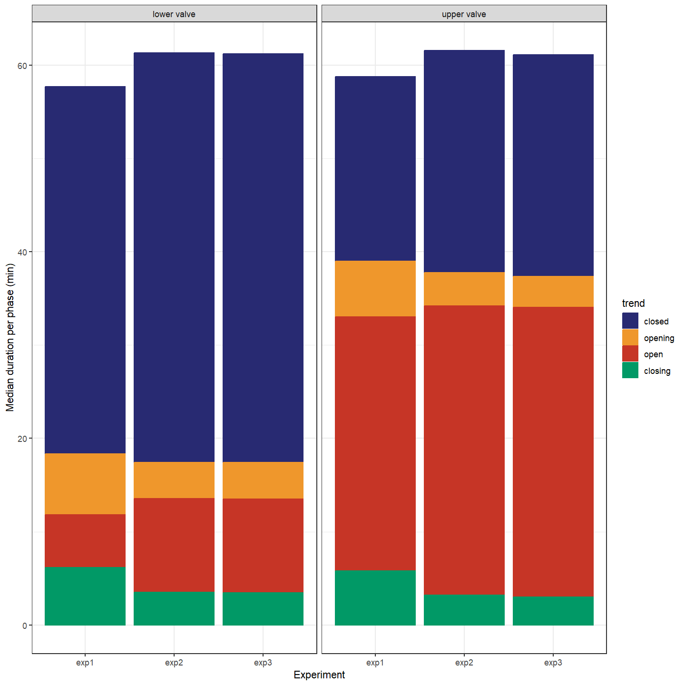
Figuur 3.3: median duration (min) of each phase (closed, opening, open and closing) per experiment.
| node | exp.gate | mean | sd |
|---|---|---|---|
| lower valve | exp1 | 96.8 | 68.2 |
| lower valve | exp2 | 8.9 | 0.3 |
| lower valve | exp3 | 8.9 | 0.3 |
| upper valve | exp1 | 102.3 | 66.1 |
| upper valve | exp2 | 8.9 | 0.3 |
| upper valve | exp3 | 8.9 | 0.3 |
3.4 Statistics of the fish movement in the FSSG
When considering all fish, the entrance time (i.e., the travel time from the lower basin (start of the experiment) to the lower valve (i.e. first detection at the lower antenna)) seemed to become lower from exp1 to exp2 to exp3 and was even significantly lower for exp3 than for exp1 and exp2 (Figure 3.4 and Table 3.6). This might be partially the result of some of the fish being re-used. Leaving out these fish resulted in a higher travel time for exp1 and exp2, but as there was no significant effect of using fish a third time, the travel time of exp3 (where many fish were used a third time) stayed more or less the same. Passage time (i.e., the travel time of fish moving from the lower valve (i.e. last detection at the lower antenna) to the upper valve (i.e. last detection at the upper antenna)) did not seem to differ between experiments. It should be noted however that though a significant difference was found between experiments for the entrance time and not for the passage time, the number of fish that were detected moving from the lower basin to the lower valve was much higher than the amount of fish that were detected moving from the lower valve to the upper valve. This affects the statistical power and allows for smaller differences in the entrance time to be identified as significant. When comparing the medians and averages, the differences between experiments appear much more pronounced for the passage time.
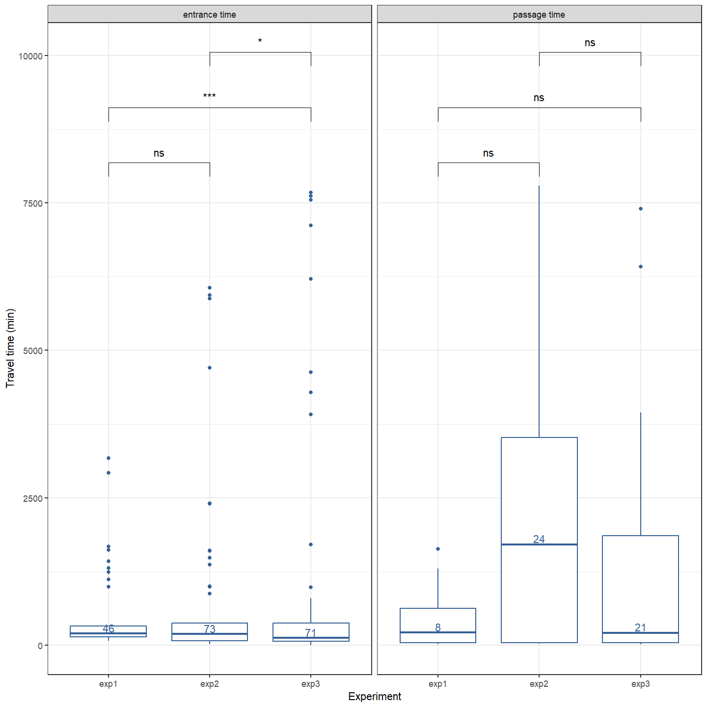
Figuur 3.4: Travel time (min) from the lower basin to the lower valve and from the lower valve to the upper valve per experiment. Pairwise wilcoxon ranks sum tests with Bonferroni correction were applied. p-values were classified as ns ($>$0.05), * (0.05-0.01), ** (0.01-0.001), *** (0.001-0.0001), **** (0.0001-0).
Travel time from the lower basin to the lower valve was considerably lower than the travel time for the lower to the upper valve (Fig. 3.5). 50% of all tagged fish had an entrance time of less than 100 (exp2) to 200 minutes (exp1 and exp3), while 50% of all entered fish had a passage time of less than 225 (exp1 and exp2) to 1200 minutes (exp3) (Fig. 3.6). After 24 hours (or 1440 minutes), approximately 85% of the entering fish had entered the FSSG. After 24 hours, approximately 50 to 85% of the passing fish had passed the FSSG.
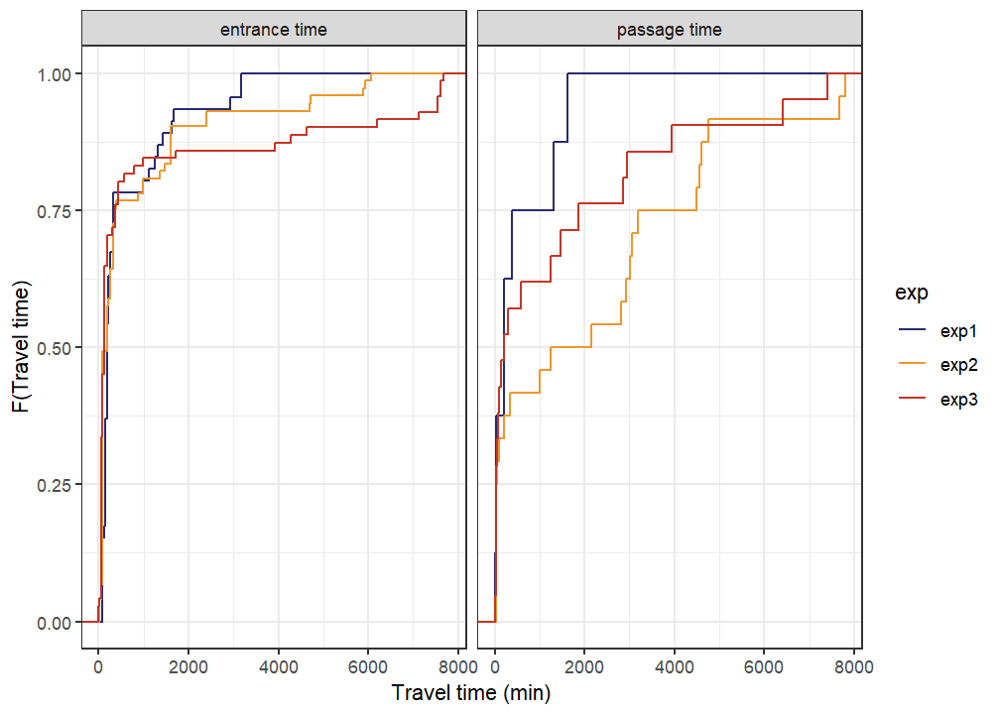
Figuur 3.5: Cumulative distribution function of the travel time from the lower basin to the lower valve, and from the lower valve to the upper valve. The y-axis depicts the proportion of fish that after a certain amount of time (x-axis) have completed the trajectory.
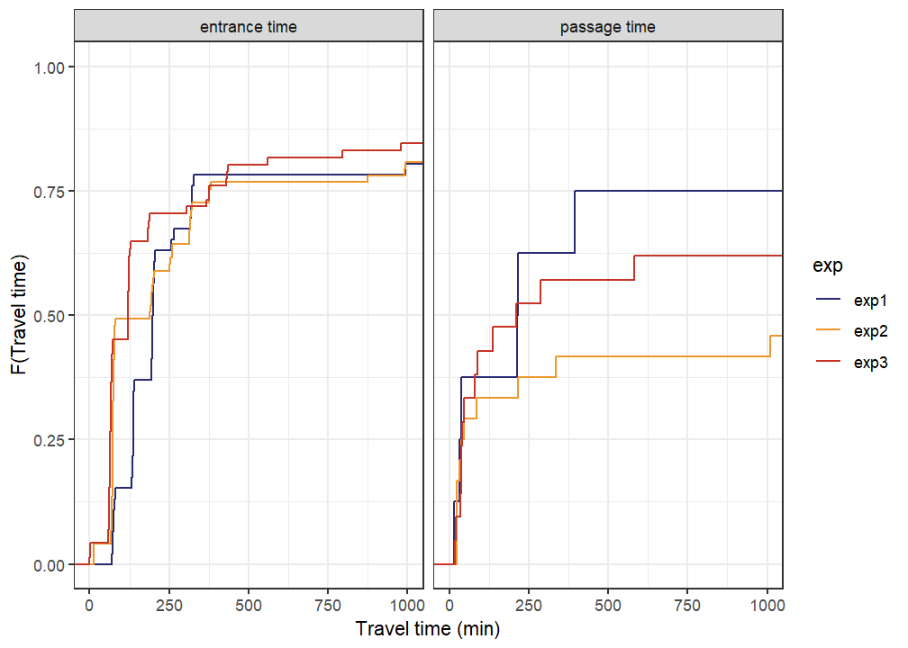
Figuur 3.6: Zoomed in (until 1000 minutes) cumulative distribution function of the travel time from the lower basin to the lower valve, and from the lower valve to the upper valve. The y-axis depicts the proportion of fish that after a certain amount of time (x-axis) have completed the trajectory.
| metric | exp | travel_time | opening | since_open |
|---|---|---|---|---|
| entrance time | exp1 | 198.3 | 27.3 | 11.9 |
| entrance time | exp2 | 189.4 | 28.8 | 8.6 |
| entrance time | exp3 | 121.6 | 29.0 | 6.6 |
| passage time | exp1 | 214.2 | 29.1 | 23.2 |
| passage time | exp2 | 1705.9 | 29.1 | 18.2 |
| passage time | exp3 | 210.9 | 29.0 | 19.8 |
This decreasing trend in travel time from the lower basin to the lower valve for later experiments is also apparent from the number of cycles before fish enter the lower valve (Figure 3.7). For both exp2 and exp3 most fish found the lower valve during the second cycle and some fish were even able to find it during the first cycle. For exp1 on the other hand, most fish found the lower valve after only the fourth cycle and none were able to find it after the first cycle. Omitting re-used fish did not affect these results much. Therefore re-used fish were also used. Results without the re-used fish are given in appendix A2.
For all experiments there were also fish that took a very long time to move to the lower valve. Indeed, many fish only found the lower valve after more than 20 cycles.
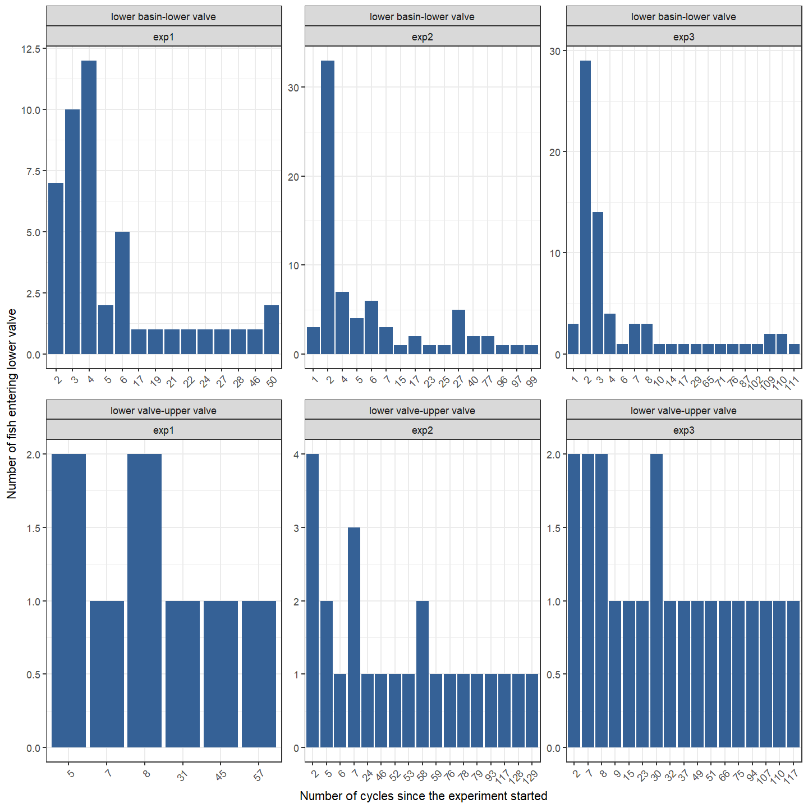
Figuur 3.7: Number of cycles before fish entering the lower valve (lower basin to lower valve) and leaving the upper valve (lower valve to upper valve) per experiment.
For exp2 and exp3, fish seem to wait until the lower valve is completely open before entering, but some fish also seem to enter when the valve is opening and closing (Figure 3.8). The time the lower valve was entered since the valve last started to open decreased significantly from exp1 to exp2 and exp3 (Figure 3.10). Especially for exp1 the time since the valve opened was much higher than for exp2 and exp3. This is somewhat to be expected as fish seem to mainly wait for the valve to be fully opened before entering and the time it takes for the valve to open and close seemed much larger for exp1 than for exp2 and exp3 (although, as mentioned earlier, this might be the result of the much lower temporal resolution of the valve-opening-measurements of exp1). However, when accounting for the different durations of the different phases the open phase still seems most important for exp2 and exp3, unlike for exp1 where now not only the opening phase seems to be more important than the open phase, but also the closing phase seems to be relatively important (Figure 3.9). Since the opening and closing phase are most important for exp1 it is to be expected that the opening of the valve at which they seem to enter the lower valve will be smaller than for exp2 and exp3. Indeed the opening at which fish enter seems to decrease significantly from exp1 to exp2 and exp3 (Figure 3.11).
Regarding the upper valve, fish also seem to mainly wait until it is completely open (Figure 3.8), but compared to the lower valve, a relatively large number seem also to leave when the valve is opening or closing. It is striking how some fish seem to pass the upper valve when it is closed. This might be the result of the detection range of the antenna being too large (detecting animals outside the FSSG) or too low (not being able to detect animals at the moment they leave). Given the low observed detectability of the upper antenna, it is most likely that the detection range is too low.
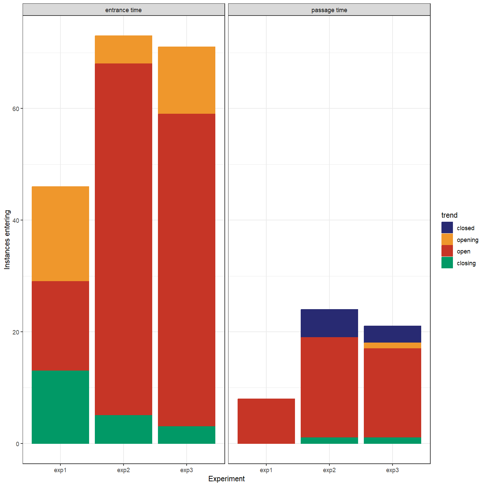
Figuur 3.8: Number of fish entering the lower valve or leaving the upper valve per phase and per experiment.
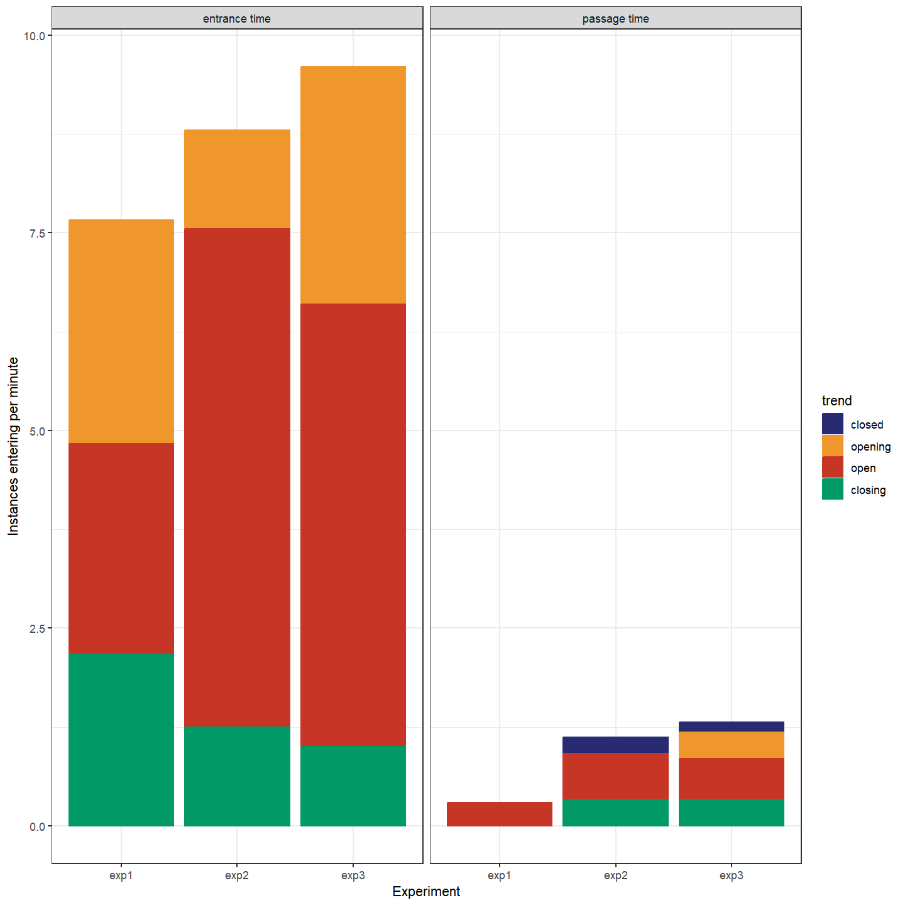
Figuur 3.9: Number of fish entering the lower valve or leaving the upper valve per phase and per experiment. To account for the different durations of each phase, the number was normalized against the duration of each phase (i.e. one fish being assigned to a short phase had more impact in the barplot than one fish assigned to a long phase).
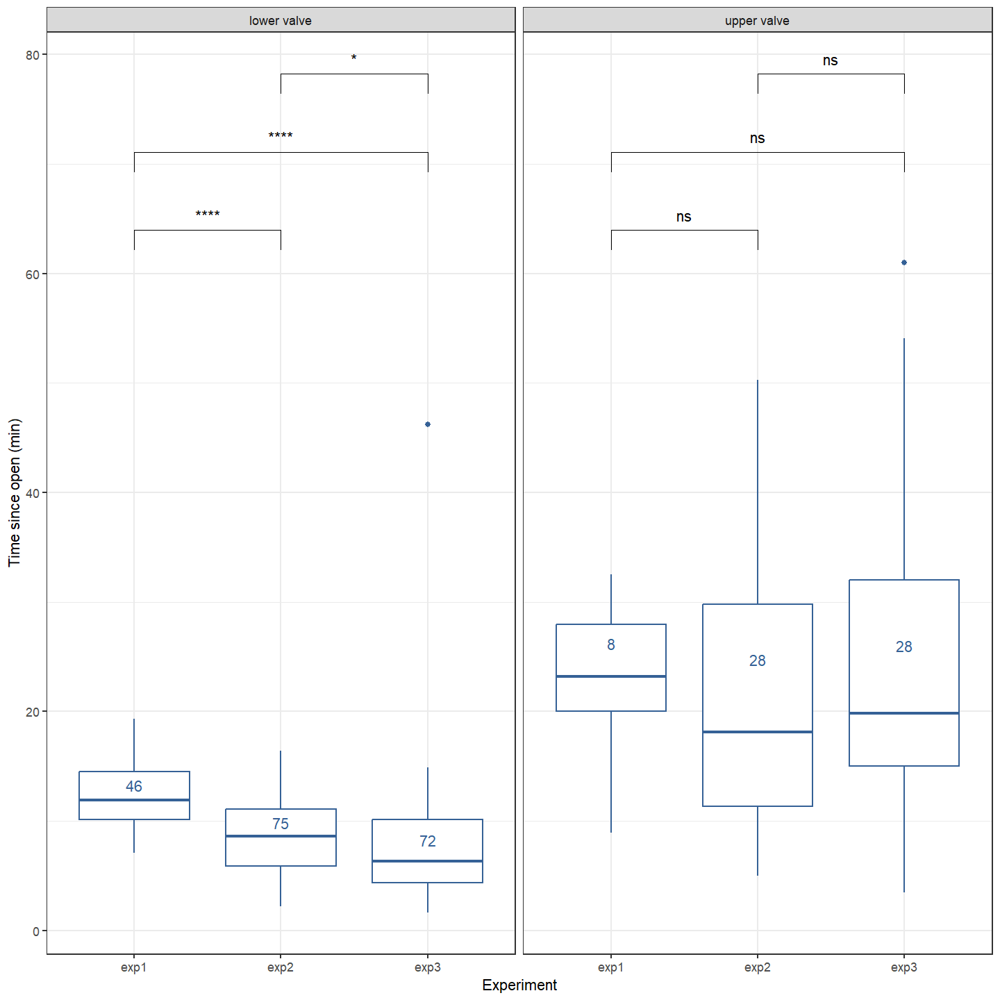
Figuur 3.10: Time since opening (min) at which fish enter or leave the lower and upper valve respectively per experiment.
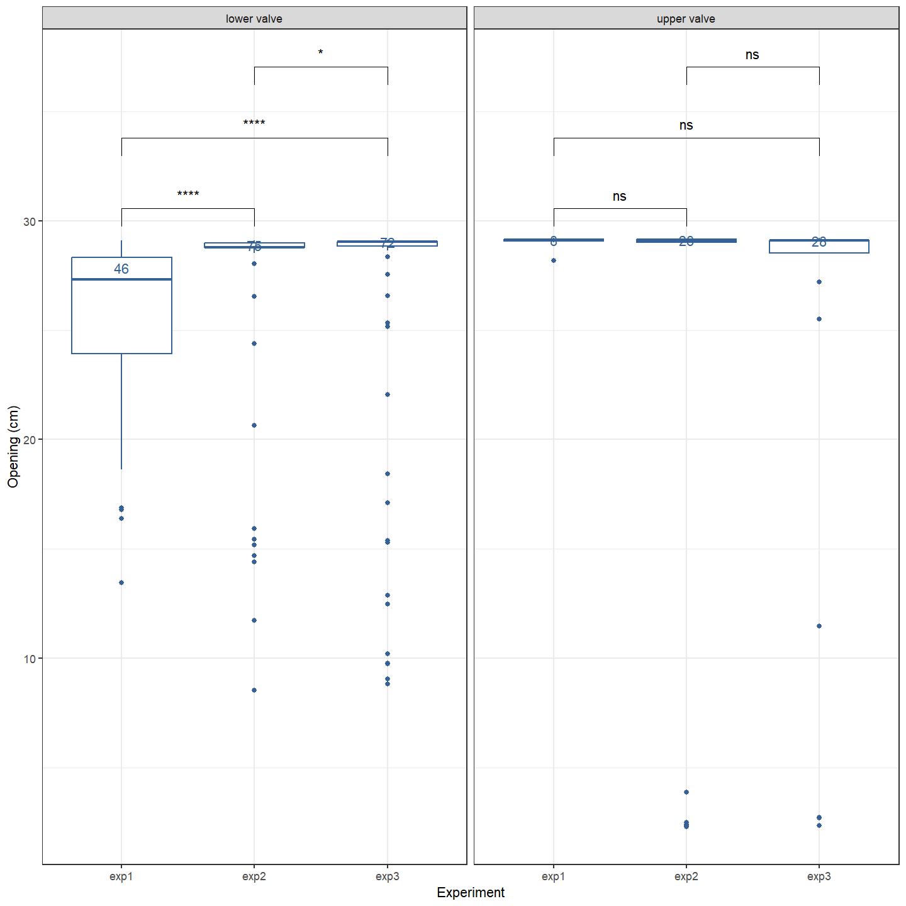
Figuur 3.11: Opening (cm) at which fish enter or leave the lower and upper valve respectively per experiment.
3.5 Graphs valve opening
In the following graphs the working of the lower and upper valve are depicted. The cycle duration and phase distribution of exp1 (Figure 3.12 and Figure 3.13), exp2 (Figure 3.14 and Figure 3.15) and exp3 (Figure 3.16 and Figure 3.17) are very similar. The slight difference in cycle duration and phase distribution of exp1 versus exp2 and exp3 is most likely the result of the much lower temporal resolution of the valve-measurement-data of the former. The pressure at the entrance ranged from 0.05 to 0.40 kPa (Figures A.17, A.19 and A.21), while at the exit it ranged from -0.30 to 0.05 kPa (Figures A.18, A.20 and A.22).
3.5.1 Graphs valve opening exp1 (may 2024)
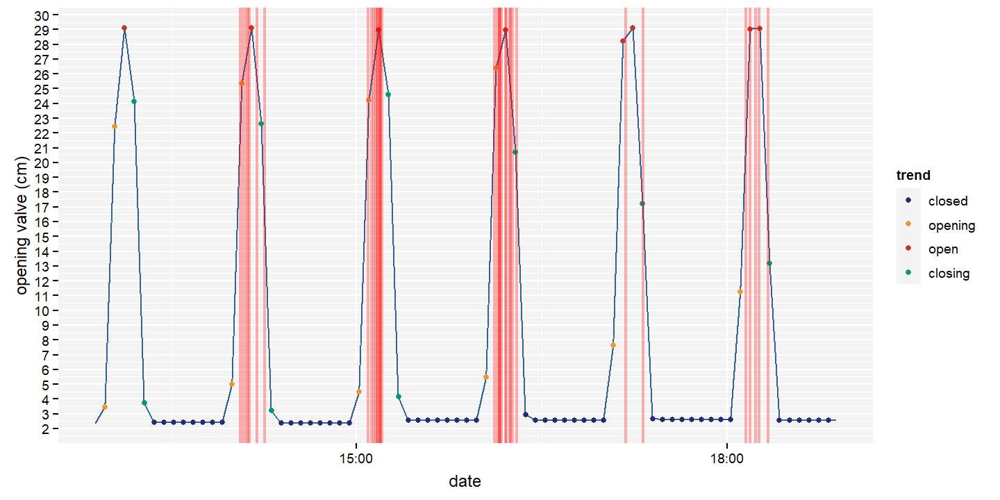
Figuur 3.12: Progression of the lower valve opening over time in blue. The vertical red lines represent the first detection at the lower valve per attempt per fish. The different phases are depicted in different colors.
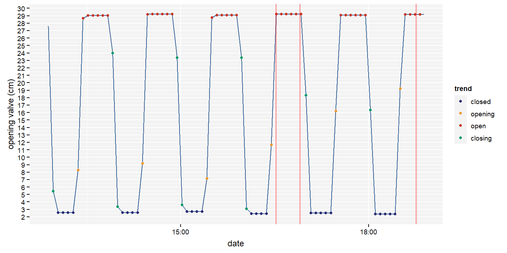
Figuur 3.13: Progression of the upper valve opening over time in blue. The vertical red lines represent the first detection at the upper valve per attempt per fish. The different phases are depicted in different colors.
3.5.2 Graphs valve opening exp2 (may 2024)
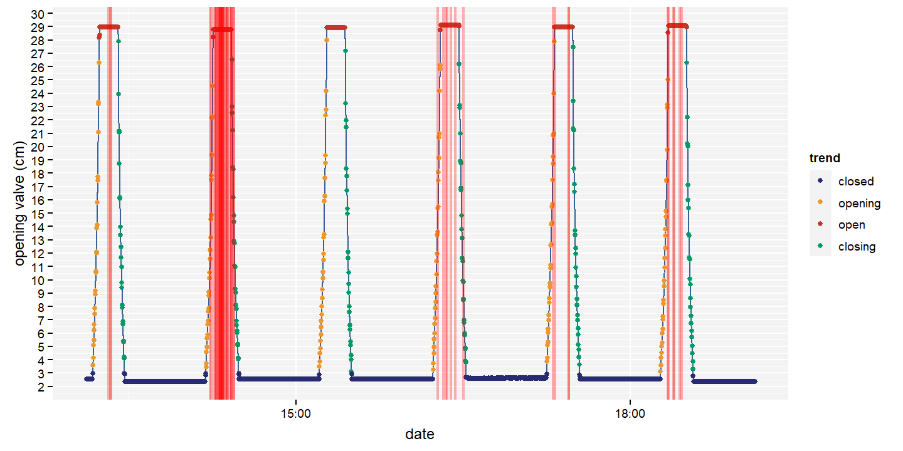
Figuur 3.14: Progression of the lower valve opening over time in blue. The vertical red lines represent the first detection at the lower valve per attempt per fish. The different phases are depicted in different colors.
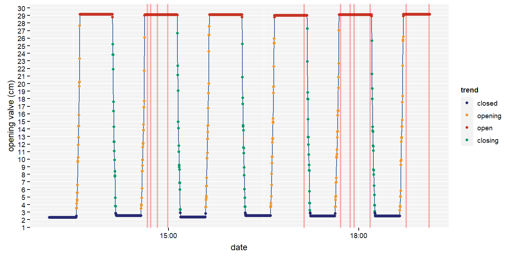
Figuur 3.15: Progression of the upper valve opening over time in blue. The vertical red lines represent the first detection at the upper valve per attempt per fish. The different phases are depicted in different colors.
3.5.3 Graphs valve opening exp3 (may 2024)
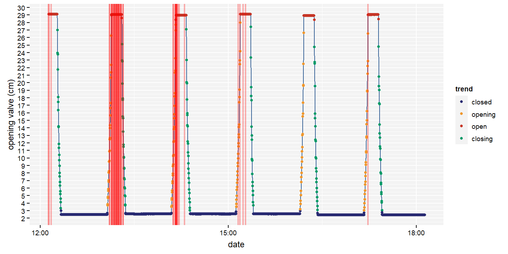
Figuur 3.16: Progression of the lower valve opening over time in blue. The vertical red lines represent the first detection at the lower valve per attempt per fish. The different phases are depicted in different colors.
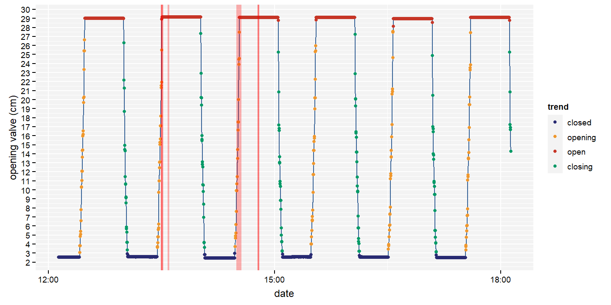
Figuur 3.17: Progression of the upper valve opening over time in blue. The vertical red lines represent the first detection at the upper valve per attempt per fish. The different phases are depicted in different colors.
NA
 Bruneel et al. (2026). 10.21436/inbor.156782614
Bruneel et al. (2026). 10.21436/inbor.156782614